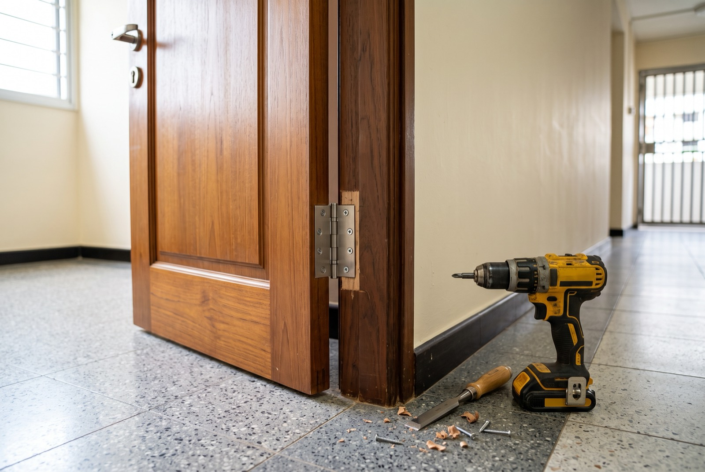

HDB door repair & replacement: what it costs in Singapore

Door not closing properly, hinge screws spinning in the frame, or the bottom of the door swollen soft? Here's the short answer on HDB door repair cost: a hinge or alignment fix typically runs S$60–120 per door, and a full bedroom door replacement in Singapore is around S$250–500 supplied and installed. On a recent RK E&C job, repairing 3 bedroom doors came to about S$380 — roughly S$125 a door. This guide walks through the common problems, when to repair versus replace, and what each option costs in 2026.
The usual suspects: why HDB doors fail
Most doors in HDB flats are original — 20, 30, sometimes 40 years old. They fail in predictable ways:
- Sagging hinges. The screws work loose in the frame over decades of swinging, the door drops a few millimetres, and suddenly it scrapes the floor or won't latch. The most common call-out, and usually the cheapest fix.
- Swollen or water-damaged bottoms. Toilet and kitchen doors soak up moisture from the base. The laminate skin bubbles, the bottom edge goes soft, and the door jams in the frame during humid weeks.
- Termite-eaten frames and doors. Subterranean termites love old timber door frames. If the frame sounds hollow when tapped or crumbles when pressed, the damage is usually worse inside than it looks. Treat the infestation first — our termite treatment cost guide covers that side.
- Dropped alignment. The door and frame no longer meet square — latch misses the strike plate, gaps uneven top to bottom. Sometimes hinges, sometimes the frame itself has shifted.
- Broken locksets. Loose lever handles, latches that stick, keys that no longer turn, or a privacy lock that's jammed with someone inside the toilet. Locksets wear out well before the door does.
Repair or replace? A simple rule
The decision hangs on one thing: is the door's core and frame still sound?
Repair when
- The problem is hinges, alignment or the lockset — hardware, not the door itself
- Swelling is limited to a small patch that can be planed and sealed
- The frame is solid and the door skin isn't delaminating
Replace when
- The bottom third is soft, swollen or crumbly — the internal core has absorbed water and won't recover
- Termites have tunnelled through the door or frame
- The laminate skin is peeling off in sheets, or the door has been patched before and failed again
- You're renovating anyway and the doors look tired against new flooring and paint
A repair on a compromised core is money spent twice — it holds for a few months, then the same problem returns. When in doubt, send a photo of the damage; a contractor can usually tell from the picture whether the core is gone.
HDB door repair & replacement cost in 2026
The figures below are anchored to a recent RK E&C job: repairing 3 bedroom doors in one HDB flat came to about S$380 — re-hinging, planing and realignment, roughly S$125 per door all-in. Around that real number, here's the typical Singapore market range:
| Job | Typical price (SGD) | Notes |
|---|---|---|
| Hinge / alignment fix | $60 – $120 per door | Re-screw, re-hinge, plane & realign |
| Multi-door repair (recent RK E&C job) | ≈ $380 for 3 doors | ≈ $125/door — bundling saves on trip charge |
| Bedroom door replacement (supply + install) | $250 – $500 | Flush at the low end, solid timber at the top |
| Toilet bifold door | $150 – $300 | PVC / aluminium, supply + install |
| Lockset replacement | $60 – $150 | Standard lever set; digital locks cost more |
Prices are indicative. The biggest saving, as with most handyman work, is bundling: doing three doors in one visit costs far less per door than three separate call-outs.
Door types, from cheapest to priciest
- Flush (hollow-core) doors. The standard HDB bedroom door — a light frame with a thin skin over a honeycomb core. Cheapest to replace, but least tolerant of water and impact damage.
- Semi-solid doors. A denser infill for better feel and sound-blocking. The sweet spot for most bedroom replacements.
- Solid timber doors. Heavy, durable, best acoustics — and the top of the price range. Worth it for a master bedroom, overkill for a store room.
- Bifold doors for toilets. PVC or aluminium folding doors that handle daily splashing far better than timber. If your toilet's timber door keeps swelling, switching to a bifold usually ends the cycle. (For wardrobe and balcony sliding doors, see our sliding door installation guide.)
- Main door — a special case. Most HDB main doors opening onto a common corridor or lift lobby must be fire-rated, per SCDF fire-safety requirements, and HDB's renovation rules apply to changing it. A fire-rated door set costs considerably more than an internal door and must be installed to spec — don't let anyone fit a normal timber door there.
Lockset replacement
Swapping a worn bedroom or toilet lockset is quick work — typically S$60–150 including a standard lever or knob set. Two things move the price:
- Hole compatibility. If the new lockset matches the existing bore, it's a 20-minute swap. If the holes need patching and re-boring, or the door edge needs a new mortise, add labour.
- Hardware choice. A basic privacy set is cheap; designer handles and digital locks are a different budget. For main doors, the lock must not compromise the fire rating.
If you're locked out of a toilet with a jammed privacy lock, most locksets can be released from outside with the right tool — worth a WhatsApp before forcing anything.
Frame repair: the part people forget
A new door hung on a rotten frame is a wasted door. Frames fail from the same two enemies — water at the base and termites inside the timber:
- Localised damage (a soft patch near the floor, one stripped hinge recess) can be cut back, packed with hardwood or filler, and re-screwed. Usually folded into the repair price.
- Extensive rot or termite damage means replacing the frame or capping it with a new sub-frame. This adds meaningfully to the job, so it's priced on inspection.
- After termites, always treat before rebuilding. New timber installed over an active colony is just fresh food.
When we quote a replacement door, we check the frame first — it determines whether you're paying for a door, or a door plus frame work.
Getting it done by RK E&C
RK E&C is a Singapore-registered renovation and handyman company (UEN 202442767D). We repair and replace HDB doors island-wide — hinges, alignment, swollen doors, bifolds, locksets and frame repair — as a standalone job or alongside our other renovation and handyman services. Fixed price before we start, our own tools, and we clear the old door when we go.
Send photos of the door and frame plus your postal code via our contact form or WhatsApp, and we'll quote you — usually the same day.
Frequently asked questions
How much does HDB door repair cost in Singapore?
Hinge tightening or realignment typically runs S$60–120 per door. On a recent RK E&C job, repairing 3 bedroom doors — re-hinging, planing and realignment — came to about S$380, roughly S$125 per door. Full bedroom door replacement is usually S$250–500 supplied and installed.
Should I repair or replace my HDB bedroom door?
Repair if the frame is sound and the problem is hinges, alignment or a small swollen patch. Replace if the core is delaminating, the bottom is badly water-damaged, or termites have eaten into the door or frame — once the core is compromised, repairs don't hold.
How much is a bedroom door replacement in Singapore?
Typically S$250–500 supplied and installed. Flush hollow-core doors sit at the low end, semi-solid in the middle, solid timber or laminate-finished doors at the top. Reusing a sound existing frame keeps costs down.
Can I change my HDB main door myself?
Not advisable. Main doors opening onto a common corridor or lift lobby must generally be fire-rated and installed to SCDF requirements, and HDB renovation rules apply. Use a contractor familiar with both.
How much does door lock replacement cost?
About S$60–150 for a standard lever or knob lockset including installation. Designer hardware, digital locks, or re-boring the door for a different lockset format cost more.
What can be done about a termite-damaged door frame?
Treat the infestation first, then assess. Lightly damaged frames can be cut back and patched; frames that crumble under thumb pressure need replacing, usually together with a new door leaf so everything is aligned and sealed in one visit.
Door scraping, jammed or falling apart?
Send us photos of the door and frame plus your postal code. Fixed-price quote, repair or replacement, island-wide.
Prices are indicative of the Singapore market in 2026 and not a quotation. Confirm a fixed price with your provider before work begins.